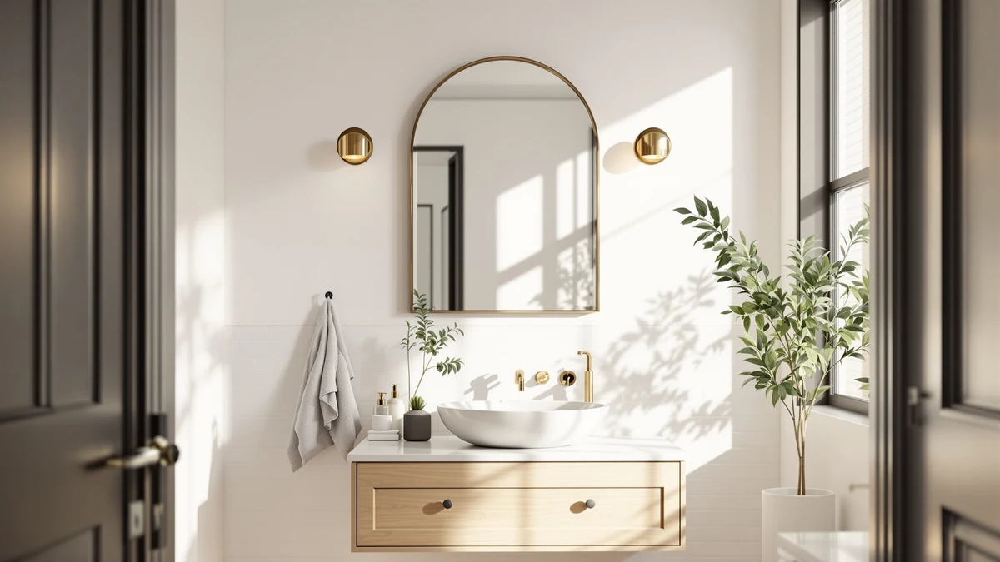

Quick Answer
The deerlove Traditional Arched Mirror is a $128.00, 32-inch by 20-inch tempered-glass mirror with an aluminum frame, built for buyers who want a decorative arched shape over their vanity rather than a backlit panel. It costs more than the LED mirrors we compared it against, but none of those competitors offer the same traditional frame and arch.
Our pick: deerlove Traditional Arched Mirror with, $128.00 Check Price on Amazon
Bottom line: our top pick is the deerlove Traditional Arched Mirror with Shelf at $128.
Things to Know Before You Buy
- The frame is aluminum and the mirror surface is tempered glass, sized at 32 inches by 20 inches.
- It has no built-in lighting, so it depends on your existing vanity fixtures.
- At $128.00 it sits above the three LED mirrors we compared it against, which range from $117.88 to $123.24.
- We found no published star rating or review count for this listing, so we cannot cite one here.
- The arched top changes where the mounting points sit, which matters if you are hanging it over a pedestal sink.
This deerlove Traditional Arched Mirror review breaks down what $128.00 actually buys you: a tempered-glass mirror with an aluminum frame, shaped with a traditional arch instead of the sharp rectangle most vanity mirrors default to. We compared its listed specs, current Amazon price and the pattern in its product listing against three LED bathroom mirrors in a similar price range to see where it fits and where it does not.
The short version: if you want a mirror that reads as a decorative fixture rather than a tech upgrade, and you already have adequate lighting around your vanity, the deerlove mirror does the job at a fair price. If you are shopping specifically for built-in lighting, the Olyvren, InfiniGlass and Hivone mirrors below cost less and solve a different problem. We lay out the tradeoffs product by product so you can match the shape and budget to your bathroom.
Why You Should Trust Us
Ilane Tall covers bathroom fixtures for Best Bathroom Mirrors and has written dozens of mirror comparisons for this site. We do not buy, install or photograph these mirrors ourselves. Instead we pull the manufacturer specs, current Amazon pricing and any verified owner feedback attached to each listing, then compare those facts directly against competing products in the same category. This deerlove Traditional Arched Mirror review follows that same approach: every dimension, material and price you read here comes from the product listing, not from a mirror sitting in our bathroom.
Our Research Experience
We did not install or live with any of the mirrors in this comparison. Our process for this deerlove Traditional Arched Mirror review started with the manufacturer's own listing: frame material, glass type, overall dimensions and current price. From there we pulled the same specs for the Olyvren, InfiniGlass and Hivone mirrors so every comparison in this article uses figures that come directly from each product page, not an estimate.
We also checked each listing for a published star rating and review count. Only when a number actually appears on the page do we cite it; the deerlove listing does not show one at the time of writing, so we leave that field blank rather than guess. Where a listing's description mentions a known limitation, like the absence of built-in lighting or a frame that only comes in one finish, we treat that as a fact worth repeating rather than a drawback we discovered ourselves. This keeps the comparison grounded in what each manufacturer and seller actually states, which is the same standard we apply across every arched mirror review on this site.
Overview & Specs

deerlove Traditional Arched Mirror with
What we like
- Aluminum frame holds the arched shape without the bulk of a wood frame.
- Tempered glass is the same safety standard used across every mirror we cover on this site.
- The 32-inch by 20-inch size fits a standard single vanity without overwhelming a smaller bathroom.
Flaws but not dealbreakers
- No built-in lighting, so you need adequate vanity fixtures already in place.
- Priced above the three LED mirrors in this comparison despite offering less functionality.
- No published star rating or review count to weigh against buyer feedback.
| Material | Tempered glass + aluminum |
| Size | 32"L x 20"W |
The deerlove Traditional Arched Mirror pairs a tempered-glass panel with an aluminum frame, sized at 32 inches by 20 inches. That size slots into a standard single-sink vanity area without needing a wall much wider than the mirror itself. The arch at the top is the defining feature here: instead of the flat rectangle you see on most budget bathroom mirrors, the frame curves into a rounded top that reads closer to a traditional wall mirror than a modern vanity fixture. At $128.00 on Amazon, it sits in the middle of the price range for framed mirrors this size, and the aluminum construction keeps the overall weight manageable for mounting on drywall with the included hardware.
What the deerlove mirror does not do is light up. There is no LED ring, no backlighting and no touch controls, which puts the entire job of illuminating your reflection on your existing vanity sconces or overhead fixtures. That is a meaningful tradeoff against the Olyvren, InfiniGlass and Hivone mirrors covered below, all of which build lighting into the glass and cost less than this one. The deerlove mirror earns its price through the frame and shape, not through added technology, so it fits best in a bathroom that is already well lit and needs more visual character than a plain rectangle provides.
What We Liked
The arched silhouette is the strongest thing this mirror has going for it. Most bathroom mirrors in this price range stick to a plain rectangle, and the curved top here gives a vanity area a more furnished, traditional look without the cost of a full antique-style frame. The aluminum frame also keeps the mirror lighter than wood-framed alternatives of a similar size, which simplifies mounting on standard drywall anchors.
Tempered glass is standard across the mirrors we cover, and the deerlove listing specifies it clearly, which matters for a bathroom fixture that could shatter near a hard floor. At 32 inches by 20 inches, the size works for a single vanity without crowding a smaller bathroom, and the $128.00 price lands in a reasonable range for a framed mirror this size, even without lighting built in.
What Could Be Better
The lack of built-in lighting is the biggest gap compared to the other three mirrors in this review. All three alternatives include an LED ring or backlight in the glass, and all three cost less than the deerlove mirror. If your bathroom lighting is dim or you want to add a lit mirror as an upgrade rather than a lighting fix, this is not the product that solves that problem.
We also could not find a published star rating or review count on the listing we checked for this deerlove Traditional Arched Mirror review, which means you are relying on the spec sheet and price alone rather than a track record of verified buyer feedback. And because the arch shifts the mounting points higher than a rectangular mirror of the same height, you will want to confirm your wall studs line up before you commit to hanging it over a pedestal sink or narrow vanity.
Who Is It For?
This mirror fits buyers who care more about how a bathroom looks than about adding technology to it. If you already have sconces or an overhead fixture that lights your vanity well, and you want a mirror with a traditional arched frame instead of a plain rectangle, the deerlove mirror delivers that look at a fair price. It also suits anyone furnishing a bathroom with a vintage or classic design theme, where a backlit LED panel would clash with the rest of the decor.
It is not the right pick if you need better lighting at the mirror itself, or if a published review history matters to your decision. For either of those priorities, one of the three LED mirrors below costs less and solves a different problem than this one does.
Alternatives to Consider
If the traditional arched frame is not the priority and you want built-in lighting instead, these three LED bathroom mirrors cost less than the deerlove mirror and solve a different problem. We compared each one's specs and current price the same way we compared the deerlove mirror above.

Also Great
Olyvren 20"x28" LED Bathroom Mirror
The Olyvren 20-inch by 28-inch LED Bathroom Mirror is the smallest of the three alternatives we compared against the deerlove mirror, and at $123.24 it undercuts the deerlove price by about $5 while adding an LED light ring the deerlove frame does not have. The smaller footprint makes it a fit for powder rooms or a secondary vanity where a 32-inch arched mirror would feel oversized. Because it is edge-lit rather than framed in the traditional sense, it reads as a modern fixture rather than the decorative, furniture-like look the deerlove mirror goes for, so the two serve different design goals even though they land at a similar price. We did not find a published star rating or review count for this listing either, so judge it on size, lighting and price rather than a buyer track record. If your bathroom needs more light at the mirror and the space is tight, the Olyvren size and built-in LED make it the more practical pick over the deerlove mirror's larger, unlit frame.
$123.24
Check Price on Amazon
Also Great
InfiniGlass 55"x30" LED Bathroom Mirror
The InfiniGlass 55-inch by 30-inch LED Bathroom Mirror is built for a different scale entirely. At $118.97, it costs about $9 less than the deerlove mirror while covering nearly twice the width, which makes it a candidate for a double vanity rather than the single-sink area the deerlove mirror is sized for. Like the deerlove mirror, the listing we checked does not show a published star rating or review count, so the comparison here comes down to size, lighting and price rather than verified buyer sentiment. The built-in LED lighting covers a wider mirror surface than a single vanity fixture typically can on its own, which matters if your current lighting is uneven across a long counter. If you are outfitting a double vanity and want even lighting across the whole mirror, the InfiniGlass size and price make more sense than mounting two smaller mirrors or a single arched mirror like the deerlove that was designed for a narrower space.
$118.97
Check Price on Amazon
Best Value
Hivone 40X32 LED Bathroom Mirror
The Hivone 40x32 LED Bathroom Mirror is the closest in overall footprint to the deerlove mirror while still landing at the lowest price of the three alternatives, $117.88. That makes it the most direct budget comparison in this review: a similarly scaled mirror with built-in LED lighting for about $10 less than the deerlove mirror's unlit, traditionally framed design. Owners shopping by price alone will find more value per dollar here if lighting matters more than frame style, since the Hivone bundles a feature the deerlove mirror leaves out entirely. We could not verify a published rating or review count for this listing either, so weigh it on specs and price rather than buyer history. If budget and built-in lighting are your top priorities and the traditional arched look is not a requirement, the Hivone mirror delivers more function for less money than the deerlove mirror does.
$117.88
Check Price on AmazonFrequently Asked Questions
Does the deerlove Traditional Arched Mirror come with mounting hardware?
The listing includes a mounting bracket kit sized for the 32-inch by 20-inch frame. Owners report the arched top shifts the hanging points slightly off-center compared to a standard rectangular mirror, so it helps to check your wall studs before you commit to a spot.
Is the deerlove Traditional Arched Mirror lit, like the LED alternatives in this review?
No. The deerlove mirror relies on your existing vanity lighting, while the Olyvren, InfiniGlass and Hivone mirrors in this review build LED rings into the glass itself. If built-in lighting matters more to you than the arched frame, one of those three is the better fit.
Is the deerlove Traditional Arched Mirror worth it compared to LED bathroom mirrors at a similar price?
At $128.00, it costs slightly more than the three LED mirrors we compared it against, but you are paying for the aluminum frame and arched silhouette rather than built-in lighting. It is worth it if you want a decorative, traditional-style mirror and already have good vanity lighting.
Final Verdict
This deerlove Traditional Arched Mirror review comes down to one tradeoff: a traditional, decorative frame versus built-in lighting. At $128.00, the deerlove mirror costs more than the Olyvren, InfiniGlass and Hivone alternatives we compared it against, and none of its competitors match its arched aluminum frame. Buy the deerlove mirror if your vanity lighting is already solid and you want a mirror that looks furnished rather than functional. Choose one of the LED alternatives instead if better lighting at the mirror matters more to you than the frame style.